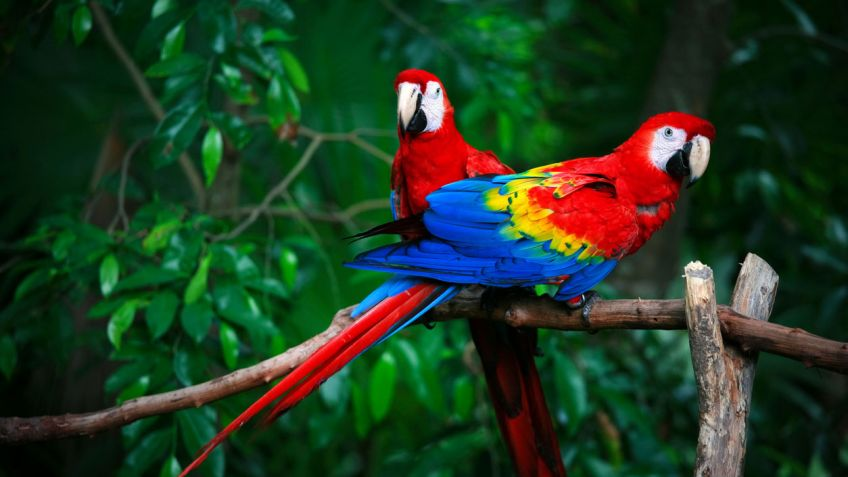

la siguiente tabla esta basa en la informacion verificada segun la descripciones encontradas en las base de datos teniendo encuenta toda la informacion
| Nombre del Animal | Pais de Origen | clasificacion |
|---|---|---|
| Caballo | Guacamaya | Elefante |
|
 | |
| Caballo | Guacamaya | Elefante |
| Los caballos son animales mamíferos perisodáctilos en cuyas extremidades poseen dedos terminados en pezuñas que pertenecen a la familia de los équidos. Son herbívoros y el periodo de gestación de las hembras es de unos 11 meses, después del cual nace tan solo una cría. | La guacamaya roja se distingue por su plumaje de color rojo escarlata y el color amarillo de las plumas cobertoras y secundarias de las alas, además de la ausencia de plumas en el rostro en donde se distinguen de 3 a 8 líneas de plumas pequeñas que forman patrones sinuosos. Las plumas cobertoras de la cola presentan un color azul claro, mientras que las plumas cobertoras primarias son rojas. El pico es grande, fuerte y curvo terminado en punta; en la parte de la mandíbula superior es de color hueso, mientras la mandíbula inferior es negro mate (Forshaw, 1989). | Es el mamífero más grande de la tierra puede pesar hasta ocho toneladas y mide 3 metros de alto por 7 de largo. Con grandes orejas en forma de abanico y una larga trompa. El elefante africano tiene tres dedos en la pata trasera y cinco en la parte delantera del pie |